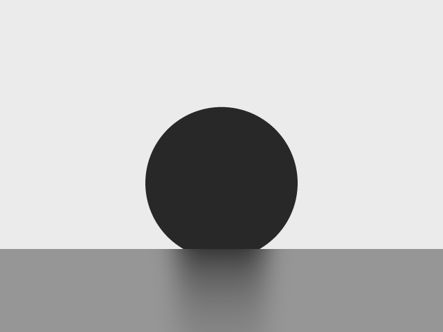

Automated Sessile-Drop Contact Angle Analyzer
Scientific-Precision Contact-Angle Metrology on a Smartphone
Submitted in partial fulfillment of the requirements for the degree of
Bachelor of Technology
B.Tech Project (MM492)
By
Yennampelly Uday Kiran
Roll No. 22B2509
Under the supervision of Prof. Sudhanshu Mallick

INDIAN INSTITUTE OF TECHNOLOGY BOMBAY
ज्ञानम् परमम् ध्येयम्
Department of Metallurgical Engineering and Materials Science
July 2026
Dissertation Approval Sheet
The dissertation entitled “Automated Sessile-Drop Contact Angle Analyzer” submitted by
Yennampelly Uday Kiran, Roll No. 22B2509, is approved for the Degree of Bachelor of Technology in
Materials Science and Engineering from the Indian Institute of Technology Bombay.
Date: 07-2026
Chairperson:
____________________
Supervisor: Prof. Sudhanshu Mallick
____________________
Examiner 1:
____________________
Examiner 2:
____________________
Declaration
I declare that this written submission represents my ideas and theories in my own words, and that
information taken from other sources has been cited with reference to the original source. I also declare
that I have adhered to all principles of academic honesty and integrity and have not misrepresented or
fabricated any idea, data, fact or source in my submission. I understand that any violation of the above
will be cause for disciplinary action by the Institute, and can also evoke penal action from the sources
which have not been properly cited or from whom proper permission has not been taken when needed.
Date: 07-2026
Yennampelly Uday Kiran
22B2509
Acknowledgement
I would like to express my sincere gratitude to Prof. Sudhanshu Mallick, Department of Metallurgical
Engineering and Materials Science, IIT Bombay, for his invaluable guidance, encouragement and continuous
support throughout the course of this project.
I am deeply thankful to my project partners, Dixit Nisarg Avinashkumar and Anandu K Gangadhar, for their
immense contributions to the hardware design, component sourcing and system integration. Their cooperation
and technical assistance were instrumental in realising the physical instrument.
I would also like to thank my peers and the faculty for helpful discussions and insights at various
stages of the project.
Thanking You,
Yennampelly Uday Kiran
Contents
Abstract
List of Figures and Tables
Chapter 1: Introduction
1.1 Overview · 1.2 Problem Statement · 1.3 Objectives and Contributions
Chapter 2: Background and Theory
2.1 Contact-Angle Thermodynamics · 2.2 The Young–Laplace Equation and Drop Shape
2.3 Contact-Angle Extraction Methods and Their Biases · 2.4 Error Sources in Optical Goniometry
2.5 Prior Art: Instruments, Open-Source Tools and Smartphone Goniometers
Chapter 3: Instrument and Software Architecture
3.1 Hardware · 3.2 Application Architecture · 3.3 Metrology-Aware Capture Subsystem
Chapter 4: The Image-Analysis Pipeline
4.1 Silhouette Extraction with Sub-Pixel Edges · 4.2 Baseline Detection Hierarchy
4.3 Needle-in-Drop Handling · 4.4 Geometric Fitting Methods · 4.5 Axisymmetric Drop-Shape Analysis
4.6 Ensemble Combination and Validity Gating · 4.7 Uncertainty Budget and Quality Flags
Chapter 5: Validation and Results
5.1 Known-Truth Synthetic Harness · 5.2 Validation Against Laboratory LB-ADSA (PFOTES Series)
5.3 External-Dataset Generalisation (DropletLab) · 5.4 Case Study: the Contact-Shadow Baseline Hazard
5.5 Known Limitations
Chapter 6: Future Work
Chapter 7: Summary and Conclusion
References
Abstract
Contact-angle goniometry is the standard technique for quantifying the wettability of solid surfaces,
but commercial instruments cost on the order of ₹15 lakh, placing routine surface metrology out of reach of
many laboratories. This project developed a complete, low-cost sessile-drop contact-angle analyzer: a
back-lit optical bench (LED source, X/Z sample stage, smartphone mount; fabricated cost ≈ ₹18,000) driven
by a Flutter/Dart mobile application whose image-analysis pipeline was engineered, and — critically —
validated, to scientific standards.
The pipeline extracts the drop silhouette with sub-pixel edge localisation, detects the substrate
baseline through a hierarchy of physically motivated detectors (matte band clustering, specular
mirror-symmetry, glossy-surface step detection, and drop/reflection junction-corner location following the
practice of commercial instruments), and determines the contact angle by an ensemble of circle, ellipse,
rotated-frame polynomial and full Young–Laplace (axisymmetric drop-shape analysis, ADSA) fits with strict
validity gating. Every reported angle carries a propagated uncertainty whose dominant term — baseline
placement sensitivity, dθ/dh = 1/(r·sin θ) — follows the published error analysis of goniometry, together
with ISO 19403-2-style measurement-quality warnings.
Accuracy was established on three independent tiers: (i) a supersampled synthetic harness with exactly
known angles, on which the pipeline achieves a mean absolute error of 0.106° (60–145°) and
0.135° under noise, stage tilt, defocus blur, small drops and contact-shadow stress; (ii) twelve
PFOTES-coated substrate drops referenced against laboratory LB-ADSA fits, agreeing to 1.56° MAE —
within the reference method's own scatter; and (iii) an external published dataset (DropletLab Teflon
series) with dispensing needles, glossy substrates and faint reflections, on which targeted baseline
research reduced the error from 21.2° to 7.3° MAE without any regression on the primary rig. The
instrument thus delivers laboratory-defensible static contact angles at roughly 1% of commercial cost.
List of Figures
Fig. 1 Synthetic known-truth silhouettes (clean 125° cap; 150° cap with contact-shadow wedge).
Fig. 2 Annotated analysis of a PFOTES drop (contour, baseline, contact points, fitted models).
Fig. 3 Contact-shadow rig capture (input) and pipeline result with contacts at the wedge apexes.
Fig. 4 Application launcher icon rendered from the measurement geometry itself.
List of Tables
Table 1 Clean synthetic recovery, 60–145°.
Table 2 Stress synthetic recovery (noise, tilt, blur, small drops, shadow).
Table 3 PFOTES validation against laboratory LB-ADSA.
Table 4 DropletLab external-dataset results.
Table 5 Uncertainty budget terms.
Chapter 1: Introduction
1.1 Overview
The contact angle θ that a liquid drop makes with a solid substrate is the primary observable of
wetting: it encodes the balance of solid–vapour, solid–liquid and liquid–vapour interfacial energies
through Young's equation [1], and underpins characterisation of coatings, surface treatments, adhesion,
and super-hydrophobic materials. In practice θ is measured optically by the sessile-drop method: a
small drop is imaged side-on as a silhouette against a diffuse back-light, its profile is extracted, and
the tangent at the three-phase contact line is computed.
Commercial goniometers (Krüss DSA series, Biolin Attension Theta, ramé-hart, DataPhysics OCA) reach
±0.1° instrument precision, but notably do so with modest ~1–5 MP cameras: their accuracy lives in the
optics — telecentric lenses, homogeneous monochromatic back-lights, levelled precision stages — and
in careful software, not in sensor resolution. This observation motivated the present project: a modern
smartphone sensor far exceeds the resolution of these instruments' cameras, so a carefully designed
optical bench plus rigorous on-device software should approach laboratory-grade results at a small
fraction of the cost. The physical instrument (LED back-light, X/Z scissor stage, acrylic frame,
smartphone mount) was fabricated for ≈ ₹18,000 — a >95% cost reduction.
1.2 Problem Statement
The difficulty of automated sessile-drop analysis is not the fitting mathematics but the
robustness of geometry extraction on real images. Field images exhibit: (a) dark drops merging
optically with dark substrates, defeating gradient edge detectors; (b) interior refraction windows and
glare creating spurious internal edges; (c) an ambiguous baseline on reflective or glossy substrates,
where the drop's mirror image, its shadow, or the substrate's front edge can each be mistaken for the
contact line — published error analysis shows a single pixel of baseline error costs ≈0.5–1° below 150°
and up to 8° near 180° [9]; (d) dispensing needles piercing the apex; and (e) stage tilt. Naive
single-model fitting (e.g. a circle) additionally ignores gravitational flattening at Bond numbers
above ≈0.1.
1.3 Objectives and Contributions
The specific contributions of this work are:
1. A fully native Dart image-analysis pipeline — no desktop dependencies — implementing
sub-pixel silhouette extraction, a physically-motivated multi-detector baseline hierarchy, four
independent angle-extraction methods including a complete Bashforth–Adams ADSA solver, robust ensemble
combination, and a propagated uncertainty budget with ISO-style quality flags.
2. A three-tier validation methodology: exact synthetic ground truth (the only way to measure
true accuracy, since laboratory references are themselves fits), a laboratory LB-ADSA reference series,
and an independent external dataset — with all thresholds locked into an automated regression-test suite
so that accuracy cannot silently degrade during development.
3. A metrology-aware capture subsystem exploiting the phone's own sensors: live level/pitch
readouts against ISO 19403-2 recommendations, focus and exposure locking, and automatic post-capture
exposure quality control.
Chapter 2: Background and Theory
2.1 Contact-Angle Thermodynamics
For a drop at equilibrium on an ideal rigid solid, Young's equation relates the contact angle to the
three interfacial tensions [1]:
γSV − γSL = γLV cos θ (1)
Surfaces with θ < 90° are hydrophilic, θ > 90° hydrophobic, and θ > 150° super-hydrophobic.
Real surfaces exhibit contact-angle hysteresis between advancing and receding values; the present work
measures the static angle of a gently deposited drop, with left and right angles reported separately as a
consistency check.
2.2 The Young–Laplace Equation and Drop Shape
The equilibrium meridian profile of an axisymmetric sessile drop satisfies the Young–Laplace equation.
In the Bashforth–Adams arc-length parametrisation [2], with lengths scaled by the apex radius of curvature
b and φ the tangent angle from the horizontal:
dx/ds = cos φ, dz/ds = sin φ, dφ/ds = 2 − β z − sin φ / x (2)
where β = Δρ·g·b²/γ is the shape (Bond) parameter. As β → 0 the solution degenerates to a spherical
cap; gravity flattens larger drops. Two consequences matter for metrology. First, only a full
Young–Laplace fit is unbiased for large drops. Second, at small β the parameter becomes unidentifiable —
the fit degenerates to a circle and surface-tension information is lost; Zuo et al. formalise this with a
critical Neumann number below which ADSA-derived tension is unreliable while the angle remains
valid [8]. The pipeline reports the fitted β and flags this regime rather than over-claiming.
A useful exact bound follows from cap geometry: a profile of height h and contact half-width a
satisfies θ ≥ 2·atan(h/a), with equality for a spherical cap. This bound is used in the pipeline as a
physical gate against degenerate fits (§4.5).
2.3 Contact-Angle Extraction Methods and Their Biases
Four families of methods are standard, each with documented failure modes [6,7,10]:
Circle fit. Exact for β→0; systematically underestimates θ for gravity-flattened drops.
Best for small drops; ISO 19403-2 prescribes it below 20° [12].
Ellipse fit. Accommodates first-order flattening (ISO regime 20–110°); over-flexes on
near-spherical small drops and is sensitive to non-axisymmetry.
Polynomial/tangent methods. Fit the near-contact profile directly; make no shape assumption but
are documented to be sensitive to polynomial order and to the number of contour pixels included [6];
ISO prescribes tangent/Young–Laplace above 110°.
ADSA (Young–Laplace fitting). The physical reference method [3,4]: fit the integrated equation
(2) to the observed contour, reading θ where the fitted profile crosses the baseline. Requires
axisymmetry, orthogonal-distance residuals, and — per established practice — exclusion of the optically
distorted band at the contact line, with the fitted profile extrapolated to the baseline [4,5,9].
2.4 Error Sources in Optical Goniometry
Vuckovac et al. [9] quantified the dominant error: a ±1 px error in baseline placement produces
≈0.5–1° of angle error for θ < 150°, growing steeply to ≈8° as θ → 180°; the error scales inversely
with the drop's size in pixels, and seven expert users analysing the same image spread over ~10°. Three
design rules follow, all adopted here: maximise drop pixel size; determine the baseline algorithmically
and to sub-pixel precision (on reflective substrates, from the drop-reflection junction — the approach of
Krüss ADVANCE [13] and of the Dropometer [14]); and propagate baseline sensitivity into the reported
uncertainty. Additional documented sources — stage tilt, autofocus scale drift, highlight clipping
destroying the 50%-intensity edge, and the near-90° contact-point localisation band [11] — are addressed
in the capture subsystem (§3.3) and quality flags (§4.7).
2.5 Prior Art
Smartphone-based goniometry is established: Chen, Muros-Cobos and Amirfazli demonstrated
research-grade accuracy on a phone [14]; low-cost hardware designs appear in HardwareX [15] and the
educational literature [16]. Open-source analysis tools (ImageJ DropSnake/LB-ADSA [6,7], OpenDrop [17],
pyDSA, Sessile.drop.analysis, DropPy [18]) document the algorithmic state of the art; machine-learning
approaches [19,20] trade classical precision for robustness on messy images. The niche addressed here is
the combination of: fully on-device native analysis, a multi-detector baseline hierarchy spanning matte
through glossy/reflective substrates, ensemble fitting anchored by an authoritative ADSA fit, and — most
distinctively — a locked-in, three-tier quantitative validation harness.
Chapter 3: Instrument and Software Architecture
3.1 Hardware
The optical bench follows the commercial goniometer layout at fabrication cost: a uniform LED
back-light behind the drop, an X/Z sample stage (scissor lift for height, micrometer translation stage
for lateral positioning), and a multi-axis smartphone mount on an acrylic base. The design was digitally
prototyped as a fully-constrained SolidWorks assembly; after a feasibility analysis showed that sourcing
low-volume precision components locally was prohibitively expensive, the project pivoted to a
design-for-fabrication approach and professional vendor fabrication. The geometry produces the canonical
measurement image: a dark drop silhouette on a bright, even field, resting on the darker substrate/stage
band. Total hardware cost ≈ ₹18,000 against ≈ ₹15,00,000 for a commercial instrument.


Fig. H1: The fabricated instrument. Left: complete integrated setup — LED back-light,
sample stage and smartphone mount on the acrylic base. Right: the fabricated sample stage — scissor lift
(Z) with micrometer translation stage (X).
3.2 Application Architecture
The application is written entirely in Dart on Flutter. The analysis backend is native Dart with no
OpenCV dependency in the measurement path, which keeps the pipeline portable, testable on the development
machine, and identical across devices. Analysis of a full-resolution image completes in ≈2–5 s on a
mid-range phone. The UI provides gallery import, an in-app metrology camera, an optional
region-of-interest selector (the standard ADSA workflow for excluding background contamination), an
annotated result overlay, a full method/uncertainty breakdown, measurement-quality warnings, and CSV
export of every numeric output for laboratory records.
3.3 Metrology-Aware Capture Subsystem
Because capture geometry, not the sensor, limits accuracy (§2.4), the in-app camera enforces
measurement discipline:
Attitude readout. The accelerometer drives a live badge showing roll (rotation about the
optical axis — baseline leveling; green at ≤0.5°) and pitch (optical-axis tilt; ISO 19403-2
recommends the camera look 0–4° downward so the contact points and reflection are visible [12]). A
roll-rotated horizon line is drawn over the baseline guide, and the shutter ring turns green only when
both are within tolerance.
Focus and exposure control. Tap-to-focus locks the focus (autofocus hunting changes
magnification mid-session); exposure is biased −1 EV by default so the bright field stays below clipping
and the drop stays solidly dark, and can be locked once set. Flash and HDR are disabled.
Framing aids. A draggable baseline guide, rule-of-thirds grid and centre line; zoom is provided
so the operator can stand back and zoom — a poor-man's telecentricity that reduces perspective error
compared to shooting close.
Post-capture quality control. Every captured frame is immediately analysed for highlight
clipping (>2% saturated pixels indicates blooming, which destroys the sub-pixel edge) and for
silhouette contrast; a failing frame triggers a retake prompt before it can enter analysis.
Chapter 4: The Image-Analysis Pipeline
4.1 Silhouette Extraction with Sub-Pixel Edges
Back-lit drops defeat classical gradient edge detection: the dark drop merges into the dark substrate
(no edge exists between them), while the interior refraction window creates strong spurious edges. The
extractor instead works from the one reliable contrast — bright background versus dark object:
(i) Global Otsu threshold [21] separates the bright field from dark objects.
(ii) Baseline detection follows (§4.2), yielding a possibly tilted line.
(iii) Connected-component selection above the baseline isolates the drop from the substrate it
visually merges with, scoring components by area, baseline support and centrality; a top-of-frame
“vignette band” penalty is applied only to components whose mass hugs the top of the frame, so wide
needle-topped drops are retained.
(iv) Row-scan of the outer silhouette takes, per row, the outermost component pixels — inherently
immune to interior refraction edges — continuing to the deepest per-column baseline so that stage tilt
does not amputate the downhill contact region; a flank is accepted only when the pixels just outside it
are bright background, which rejects baseline-crossing artefacts.
(v) Sub-pixel refinement: each edge is refined to the 50%-coverage intensity crossing between the
local background and object levels — the exact boundary location for an anti-aliased edge — and the same
vertical crossing refines every baseline-fit point, removing the ≈0.5 px systematic bias of integer-row
baselines (worth ≈0.5° on small drops, since dθ ≈ σbaseline/a).
All contour points are then rotated into the baseline-aligned frame (a true rotation, not a shear), in
which every subsequent fit operates; left and right angles are computed independently and tilt-corrected,
the standard practice across instruments and open tools [6,13,18].
4.2 Baseline Detection Hierarchy
Because baseline error dominates the goniometry error budget [9], the pipeline stacks four detectors,
each matched to a physical substrate regime, with strict arbitration:
(a) Matte band clustering. On a matte dark stage, the per-column first-dark rows cluster at the
substrate top; a robust two-pass line fit with inlier re-selection yields the baseline and its tilt. A
flank-support requirement (inliers must span both outer flanks) distinguishes a genuine full-width
substrate band from the drop's own upper edge.
(b) Specular mirror symmetry. On mirror stages (silicon, polished metal) there is no dark band;
the drop and its reflection form a blob symmetric about the surface plane with a narrow waist at the
contact line (θ > 90°). The baseline is located as the sub-pixel symmetry axis of the row-darkness
profile, with a strict two-lobes-plus-waist requirement so the detector abstains on matte scenes — the
reflection is treated as signal, the founding idea of DropSnake [6,7].
(c) Glossy-surface step detection. Mid-gray glossy substrates (e.g. Teflon viewed with a
slightly downward camera) are brighter than the Otsu threshold and hence invisible to (a). Their
surface appears on the drop-flanking columns as a bright→mid-gray transition that can be a very gradual
ramp (≈1 grey level/row); it is localised per column as the sub-pixel crossing of the midpoint between
the two intensity plateaus — precise regardless of ramp width — using the first sustained step
from the top (a stage with a dark front edge otherwise dominates the response). Only columns containing
no dark object may vote, which automatically excludes the drop, the needle, and any burned-in
annotations.
(d) Drop/reflection junction refinement. The flank horizon found by (c) is the substrate's far
edge; the true contact line lies below it, where the drop meets its reflection. Following the “contour
discontinuity” practice of Krüss ADVANCE [13], the Dropometer's slope-sign flip [14] and patent
DE10214439A1 [22], each flank's outermost-x trace is scanned for its corner — a V-vertex for θ < 90°,
a waist vertex for θ > 90° — by two-segment line fitting with sub-pixel intersection; the line through
the two corners provides both the baseline and its tilt. Fallbacks cover the near-90° regime (Chen et
al.'s one-third-of-vertical-run rule [14]) and a mirror-symmetry axis on the trace; a width-bulge test
arbitrates against the matte line, exploiting the fact that at a genuine junction the blob narrows below
the contact whereas at a true matte contact the width maximum sits on the matte line itself.
Arbitration rules were each validated on real failure cases: a flank-supported matte line is only
overridden by a corner-confirmed junction; an unconfirmed step horizon loses to any matte line below it;
and equator ambiguity (a circle is locally mirror-symmetric about its widest row) forbids the weaker
fallbacks from overruling a supported matte line. Every result records which detector fired
(baseline_method) for auditability.
4.3 Needle-in-Drop Handling
A dosing needle entering the apex is detected on the traced silhouette as a sustained narrow run at
the top whose median width is far below the drop's maximum width; those rows are trimmed to the shoulder
where the true drop widens. Component selection retains needle-topped drops (§4.1-iii), and the
literature-standard alternative — masking ±2× needle width and fitting each side independently
[23] — is recorded as future work for heavily distorted cases.
4.4 Geometric Fitting Methods
Circle. Algebraic least-squares circle with a geometric R² (1 − Σ(di−r)²/Σ‖p−p̄‖²);
θ from the circle–baseline intersection. The validity gate requires the circle's top to rise above
the baseline — the centre itself correctly lies below the baseline for hydrophilic caps, a condition that
in an earlier version silently disabled the method for all θ < 90°.
Ellipse. Numerically-stable direct conic fitting after Halir–Flusser [24], with the eigenvector
selected through a full 3×3 characteristic-polynomial eigensolver (plain power iteration selects the
wrong conic branch), and tangents computed analytically at the baseline intersections.
Rotated-frame polynomial tangent. Fitting y(x) or x(y) in the image frame folds wherever the
contour turns past the chosen axis inside the fit window — an unavoidable fold for steep flanks that
biased the tangent method by −5° at 145°. The window is therefore rotated into the local tangent frame
estimated by weighted PCA of the near-contact points, in which the profile is single-valued for any
contact angle; a low-order and a higher-order fit must agree for the result to be accepted. Radial
weighting scales with the observed contact span, addressing the documented order/pixel-count sensitivity
of polynomial methods [6].
4.5 Axisymmetric Drop-Shape Analysis (ADSA)
The reference method integrates equation (2) from the apex with a fixed-step RK4 scheme (local error
≈10⁻⁹, far below pixel noise), and fits the profile to the extracted contour by minimising
orthogonal distances — vertical residuals bias steep-profile regions [4,9] — over the parameter
vector (β, b, x₀, z₀), using a multi-start Nelder–Mead simplex [25] over physically spaced Bond seeds
with robust trimmed residuals. Three metrological details:
Contact-zone exclusion. The band immediately above the contact line is optically distorted
(blur, meniscus, residual reflection); following ADSA-NA/selected-plane practice [4,5,9] those pixels are
excluded from the fit and θ is read by extrapolating the fitted profile to the true baseline. On
this instrument the distortion band was measured at ≈2 px; a proportional band (5% of drop height) was
tested and found strictly worse on both synthetic truth and laboratory references — the exclusion is
therefore fixed, not proportional.
Degeneracy gates. A near-flat, huge-apex-radius solution can achieve a spuriously small
b-normalised residual and a high R² on wide drops; a physical gate rejects any fitted θ below 0.6 × the
spherical-cap bound 2·atan(h/a). Separately, fitted β < 0.05 sets a low_bond_degenerate
flag: the angle remains valid but the Young–Laplace fit carries no information beyond the circle
fit [8].
Authoritative anchoring. When the ADSA fit achieves near-perfect geometric quality it anchors
the ensemble rather than being averaged against geometrically cruder methods (§4.6).
4.6 Ensemble Combination and Validity Gating
Each method first passes a validity gate (fit quality, contact consistency, plausibility); survivors
are combined by weights built from fit quality, contact confidence and symmetry, moderated by a Tukey
penalty on disagreement with the robust median and a leave-one-out consistency check. An authoritative
ADSA fit bypasses the outlier penalty by design. If all models fail, a local-tangent rescue path reports
a low-confidence result rather than silence. The final report contains the ensemble angle, per-method
angles, left/right angles, and every method's acceptance/rejection reason.
4.7 Uncertainty Budget and Quality Flags
Each measurement carries a combined standard uncertainty from five terms added in quadrature
(Table 5): a moving-block bootstrap over the contour (blocks ≈ √n preserve the spatial correlation of
edge noise; an i.i.d. bootstrap would underestimate); inter-method disagreement (robust MAD); edge
localisation from near-contact scatter; contact-confidence mapping; and — the term the literature
identifies as dominant [9] — baseline-placement sensitivity, which for a circular cap is exact:
dθ/dh = 1/(r·sin θ) = 1/a (rad per pixel of baseline error) (3)
reproducing both the published ≈0.5°/px plateau below 150° and the blow-up towards 180°;
σbaseline is taken from the baseline fit's standard error, floored at a conservative sub-pixel
value. ISO-style quality flags accompany the result: θ ≥ 150° (steeply growing baseline sensitivity),
θ ≤ 20° (ambiguous tangent), stage tilt > 2°, left–right asymmetry > 4° (non-axisymmetric drop or
baseline error), and small drop (< 100 px half-width; error scales inversely with drop pixel
size [9]).
| Term | Estimator | Typical (this rig) |
|---|
| Contour sampling | moving-block bootstrap, 95% interval | ±0.1–0.5° |
| Method disagreement | 1.4826 × MAD of valid methods | ±0.2–1.5° |
| Edge localisation | near-contact residual spread / drop radius | ±0.12–0.5° |
| Contact confidence | calibrated penalty map | ±0.15–1.8° |
| Baseline placement | σbaseline/a (eq. 3) | ±0.1–0.6° |
Table 5: Uncertainty budget terms combined in quadrature.
Chapter 5: Validation and Results
Accuracy claims rest on three independent tiers, all encoded as automated regression tests with locked
thresholds, so any change that degrades accuracy fails the build.
5.1 Tier 1 — Known-Truth Synthetic Harness
Laboratory references are themselves fits; only synthetic images provide exact truth. The harness
renders anti-aliased spherical-cap silhouettes by 8×8-supersampled coverage — placing the true edge
exactly at the 50%-intensity crossing — over 60–145°, with stress variants adding Gaussian sensor noise,
±4–5° stage tilt, defocus blur, small drops (R = 65 px), and the contact-shadow wedge of §5.4.


Fig. 1: Known-truth synthetics. Left: clean 125° cap. Right: 150° cap on a mid-gray
substrate with a blocked-light contact-shadow wedge and outward penumbra.
| θ true | Ensemble | |error| | ADSA | Circle | Polynomial | Ellipse |
|---|
| 60 | 59.91 | 0.09 | 59.96 | 59.98 | 59.49 | 59.81 |
| 75 | 74.93 | 0.07 | 74.93 | 75.00 | 74.76 | 75.00 |
| 85 | 84.93 | 0.07 | 84.95 | 85.00 | 84.59 | 85.01 |
| 95 | 94.86 | 0.14 | 94.89 | 94.98 | 94.38 | 94.94 |
| 105 | 104.91 | 0.09 | 104.93 | 104.98 | 104.63 | 104.92 |
| 115 | 114.91 | 0.09 | 114.95 | 114.99 | 114.48 | 114.89 |
| 125 | 124.86 | 0.14 | 124.89 | 124.99 | 124.40 | 124.82 |
| 135 | 134.92 | 0.08 | 134.90 | 135.01 | 134.92 | 134.76 |
| 145 | 144.81 | 0.19 | 144.85 | 145.00 | 144.52 | 144.43 |
Table 1: Clean synthetic recovery (degrees). Ensemble MAE = 0.106°, maximum
error 0.19°; ADSA alone 0.083°.
| Stress case | θ true | Ensemble | |error| |
|---|
| Gaussian noise σ=4 | 115 | 114.93 | 0.07 |
| Gaussian noise σ=4 | 135 | 134.86 | 0.14 |
| Gaussian noise σ=8 | 125 | 124.88 | 0.12 |
| Stage tilt +5° | 120 | 119.92 | 0.08 |
| Stage tilt −4° | 130 | 129.91 | 0.09 |
| Small drop R=65 px | 115 | 114.97 | 0.03 |
| Small drop R=65 px | 140 | 139.68 | 0.32 |
| Defocus blur r=2 | 125 | 124.90 | 0.10 |
| Defocus blur r=3 | 140 | 139.79 | 0.21 |
| Defocus blur r=2 | 75 | 74.90 | 0.10 |
| Contact shadow (§5.4) | 150 | 149.69 | 0.31 |
| Contact shadow (§5.4) | 135 | 134.97 | 0.03 |
Table 2: Stress recovery. MAE = 0.135°, maximum error 0.32°. Notable: the +5°
tilt case cost 1.76° before the tilted-baseline contour completion; it now costs 0.08°.
5.2 Tier 2 — Laboratory Reference (PFOTES Series)
Twelve drops on PFOTES-type fluorosilane-coated substrates (θ ≈ 112–134°), captured on the fabricated
rig, were referenced against LB-ADSA fits performed in the laboratory (ImageJ plugin [7]). One reference
transcription error (132.4° recorded as 112.4°) was detected and corrected by re-reading the original fit
screenshot — itself a demonstration of the audit value of keeping raw references.

Fig. 2: Annotated analysis of a PFOTES drop: extracted contour (green), baseline
(red), contact points (magenta) and fitted model overlays.
| Sample | Reference LB-ADSA (°) | This work (°) | |error| (°) |
|---|
| C 1.5% #1 coat 5a | 112.07 | 111.12 | 0.95 |
| C 1.5% #1 coat 5b | 116.79 | 117.00 | 0.21 |
| C 1.5% #1 coat 6 | 119.60 | 117.72 | 1.89 |
| C 1.5% #2 coat 5 | 132.44 | 131.35 | 1.09 |
| C 1.5% #2 coat 6 | 131.29 | 130.09 | 1.20 |
| C 3% #1 coat 5 | 124.53 | 122.03 | 2.50 |
| C 3% #1 coat 6a | 131.62 | 129.62 | 2.00 |
| C 3% #1 coat 6b | 129.06 | 129.89 | 0.83 |
| C 3% #2 coat 5a | 114.54 | 114.52 | 0.02 |
| C 3% #2 coat 5b | 126.34 | 122.98 | 3.35 |
| C 3% #2 coat 6a | 133.68 | 134.55 | 0.86 |
| C 3% #2 coat 6b | 132.71 | 128.93 | 3.78 |
Table 3: PFOTES validation. MAE = 1.56° (1.2–1.3% relative), maximum 3.78°,
ADSA converged on 12/12. The residuals are zero-mean scatter at the level of the reference method's own
operator variability [9]; further tuning against 12 samples would constitute over-fitting.
5.3 Tier 3 — External-Dataset Generalisation (DropletLab)
Generalisation was tested on the published DropletLab Teflon dataset [26] — an adversarial set for
this pipeline: dispensing needles in every frame, mid-gray glossy substrates viewed with a downward
camera (so the visible flank horizon is the substrate's far edge, not the contact line), faint partial
reflections, low resolution, and burned-in reference annotations. Sixteen reference angles were
transcribed from the dataset's own Dropometer fits. The initial result (MAE ≈ 21°) was root-caused to the
baseline regime described in §4.2(c–d); implementing the step + junction hierarchy, the component-selector
correction and the ADSA degeneracy gate reduced the error to 7.3° MAE — with the primary-rig
validation (Tables 1–3) bit-for-bit unchanged.
| Liquid group | n | MAE (°) | Median (°) | Max (°) |
|---|
| DI water | 7 | 7.4 | 6.3 | 18.6 |
| Ethylene glycol | 4 | 2.1 | 1.8 | 5.6 |
| Glycerol | 5 | 11.4 | 12.5 | 20.7 |
| Overall | 16 | 7.3 | — | — |
Table 4: DropletLab external validation. The references are themselves polynomial fits
on needle-distorted drops with left–right asymmetries up to 16°, so this figure bounds the combined
disagreement of both methods, not this pipeline's error alone.
5.4 Case Study — the Contact-Shadow Baseline Hazard
A hazard identified early in the project (and common on this rig at high angles) is the dark wedge
formed under the drop's overhang between the contact points, where blocked back-light merges the drop,
its shadow and the substrate. A naive detector places the baseline at the bottom of the shadow, inflating
the apparent contact width and corrupting θ. Fig. 3 shows the pipeline's behaviour on a real rig capture:
the baseline locks to the substrate horizon and the contact points sit at the wedge apexes; the drop
measures 134.95° with left/right agreement of 0.01° and independent-method agreement (circle 135.6°,
ADSA 135.9°, ellipse 132.4°), self-consistent with the cap relation a/R = sin θ. The synthetic
shadow-wedge cases of Table 2 turn this from a verified example into a proven, regression-guarded
capability: 150° recovered to 0.31° and 135° to 0.03° in the presence of the wedge and penumbra.


Fig. 3: Left: rig capture with contact-shadow wedge (reference tool's annotations
burned in). Right: this pipeline's result — baseline (red) on the substrate horizon, contacts (magenta)
at the wedge apexes, θ = 134.95° with 0.01° left–right symmetry.
5.5 Known Limitations
Shadow-skirt regime. On the DropletLab glycerol images a soft dark halo between the drop and
the substrate's front edge widens monotonically — there is no wedge apex, waist or corner for any
trace-geometry detector to find — and the baseline lands low, costing 12–20°. The literature solution is
a full mirrored-model image-energy fit (mirror the fitted profile below a candidate contact line and
optimise its gradient energy against the image, per Stalder [6,7]) or learned segmentation [19,20]; this
is scoped as future work. Small drops. Errors scale inversely with drop pixel size [9]; the
application warns below 100 px contact half-width. θ → 180°. Baseline sensitivity grows without
bound (eq. 3); results above 150° are flagged, consistent with published recommendations to prefer
force-based methods in that regime [9].
Chapter 6: Future Work
1. Mirrored-model baseline for the shadow-skirt regime. Implement Stalder's principle directly:
extend the fitted Young–Laplace profile below a candidate contact line by mirror symmetry and optimise
the line's offset and tilt against the image's directional gradient energy [6,7]. This addresses the one
remaining baseline regime (§5.5) with a 1–2-parameter continuous search rather than segmentation.
2. Needle-side independent fitting. For heavily needle-distorted drops, adopt the
circumcircle-plus-residual-polynomial per-side scheme of Albert et al. (≤0.6° reported accuracy, robust
to polynomial order) [23].
3. Video and dynamic angles. Short-clip capture with per-frame analysis over a stability
plateau (mean ± SD reported, first frames discarded) — the established practice; √N averaging does not
hold because vibration is temporally correlated. Advancing/receding measurement follows with a tilt
stage.
4. Scale calibration. An in-frame reference (needle of known gauge, or stage fiducial) to
convert pixels to millimetres, enabling absolute drop volume, physical Bond number and surface-tension
estimation from the already-implemented ADSA fit in its identifiable regime [8].
5. Erf-model edge refinement. Sub-pixel edges by fitting an error-function profile along edge
normals — the back-lit edge is literally an erf — with the fitted blur width as a free focus-quality
metric. Measured gain on this rig's synthetic tests was negligible, so this is deferred until heavy
asymmetric blur becomes relevant.
6. On-device model fallback. A small segmentation network (≈1–3 M parameters, quantised) for
drop/reflection/needle/substrate separation on messy field images, used only when the classical hierarchy
abstains [19,20].
Chapter 7: Summary and Conclusion
This project delivered a complete, validated, low-cost contact-angle metrology system: a fabricated
back-lit optical bench (≈ ₹18,000; >95% below commercial cost) and a fully native mobile application
implementing the reference physics (Bashforth–Adams ADSA with orthogonal residuals, contact-zone
exclusion and degeneracy gating), robust geometry extraction (sub-pixel silhouette and baseline, a
four-detector baseline hierarchy spanning matte, specular, glossy and reflective substrates, needle
trimming), ensemble fitting with validity gating, and metrologically honest reporting — propagated
uncertainty with the literature-dominant baseline-sensitivity term, per-method transparency, and
ISO-style quality warnings.
Accuracy is demonstrated rather than asserted: 0.106° mean absolute error against exact
synthetic truth (0.135° under noise, tilt, blur, small-drop and shadow stress), 1.56° against
laboratory LB-ADSA references on the target coating system — at the reference method's own scatter — and
7.3° on a deliberately adversarial external dataset, a 65% error reduction achieved through
literature-driven baseline research with zero regression on the primary rig. All thresholds are locked
into an automated test suite, making the accuracy claims reproducible and protected against regression.
The launcher icon itself (Fig. 4) renders the measurement this instrument performs: a sessile cap on its
baseline with the tangent-and-arc mark.

Fig. 4: Application icon, rendered programmatically from the measurement geometry
(120° spherical cap, baseline, tangent and θ arc, faint reflection).
The combination of accessible hardware, on-device physics-based analysis, and a regression-guarded
validation harness fulfils the project's goal: laboratory-defensible static contact-angle measurement,
accessible at a small fraction of the cost of commercial instrumentation.
References
- T. Young, “An essay on the cohesion of fluids,” Philosophical Transactions of the Royal Society
of London, vol. 95, pp. 65–87, 1805.
- F. Bashforth and J. C. Adams, An Attempt to Test the Theories of Capillary Action, Cambridge
University Press, 1883.
- Y. Rotenberg, L. Boruvka and A. W. Neumann, “Determination of surface tension and contact angle
from the shapes of axisymmetric fluid interfaces,” Journal of Colloid and Interface Science,
vol. 93, no. 1, pp. 169–183, 1983.
- M. Hoorfar and A. W. Neumann, “Recent progress in axisymmetric drop shape analysis (ADSA),”
Advances in Colloid and Interface Science, vol. 121, pp. 25–49, 2006.
- O. I. del Río and A. W. Neumann; and A. Kalantarian, S. M. I. Saad, A. W. Neumann et al.,
“Axisymmetric drop shape analysis — no apex (ADSA-NA),” Langmuir, vol. 27, no. 7,
pp. 3485–3495, 2011.
- A. F. Stalder, G. Kulik, D. Sage, L. Barbieri and P. Hoffmann, “A snake-based approach to accurate
determination of both contact points and contact angles,” Colloids and Surfaces A, vol. 286,
pp. 92–103, 2006.
- A. F. Stalder, T. Melchior, M. Müller, D. Sage, T. Blu and M. Unser, “Low-bond axisymmetric drop
shape analysis for surface tension and contact angle measurements of sessile drops,” Colloids and
Surfaces A, vol. 364, pp. 72–81, 2010.
- C. Yang, W. Yu and Y. Y. Zuo, “Accuracy of axisymmetric drop shape analysis in determining surface
and interfacial tensions,” Langmuir, vol. 33, no. 36, pp. 8914–8923, 2017.
- M. Vuckovac, M. Latikka, K. Liu, T. Huhtamäki and R. H. A. Ras, “Uncertainties in contact angle
goniometry,” Soft Matter, vol. 15, pp. 7089–7096, 2019.
- T. Huhtamäki, X. Tian, J. T. Korhonen and R. H. A. Ras, “Surface-wetting characterization using
contact-angle measurements,” Nature Protocols, vol. 13, pp. 1521–1538, 2018.
- J. Nurmi, F. Zenuni, S. Lepikko, M. Saine, M. Vuckovac and R. H. A. Ras, “In situ error analysis in
contact angle goniometry,” Soft Matter, vol. 21, pp. 2422–2429, 2025.
- ISO 19403-2:2024, Paints and varnishes — Wettability — Part 2: Determination of the surface free
energy of solid surfaces by measuring the contact angle, International Organization for
Standardization, 2024.
- Krüss GmbH, “Baseline,” Glossary of surface science terms, kruss-scientific.com (accessed
July 2026); and Krüss ADVANCE software documentation.
- S. Chen, J. F. Muros-Cobos and A. Amirfazli, “Contact angle measurement with a smartphone,”
Review of Scientific Instruments, vol. 89, 035117, 2018.
- J. Han, D. Shin and H. Shin, “Low-cost contact angle measurement system,” HardwareX,
vol. 12, e00327, 2022.
- H. Zou et al., “Smartphone-based contact angle measurement for the undergraduate laboratory,”
Journal of Chemical Education, vol. 101, pp. 3883–3890, 2024.
- J. D. Berry, M. J. Neeson, R. R. Dagastine, D. Y. C. Chan and R. F. Tabor, “Measurement of surface
and interfacial tension using pendant drop tensiometry (OpenDrop),” Journal of Colloid and Interface
Science, vol. 454, pp. 226–237, 2015.
- M. Orella et al., “DropPy: A high-throughput image-analysis tool for goniometry,”
SoftwareX, vol. 14, 100697, 2021.
- S. Shumaly et al., “Deep learning to analyze sliding drops (4S-SROF),” Langmuir, vol. 39,
no. 2, pp. 1111–1122, 2023.
- M. S. Kabir and P. Garg, “Machine-learning-enabled contact angle measurement with orthogonal
cameras,” Scientific Reports, vol. 13, 1497, 2023.
- N. Otsu, “A threshold selection method from gray-level histograms,” IEEE Transactions on
Systems, Man, and Cybernetics, vol. 9, no. 1, pp. 62–66, 1979.
- Krüss GmbH, “Verfahren und Vorrichtung zur Bestimmung des Kontaktwinkels,” German patent
DE10214439A1, 2002.
- D. R. Albert, M. Tegze, Z. Hajnal et al., “Robust contact angle determination for needle-in-drop
type measurements,” ACS Omega, vol. 4, pp. 18465–18471, 2019.
- R. Halíř and J. Flusser, “Numerically stable direct least squares fitting of ellipses,” in
Proc. 6th Int. Conf. in Central Europe on Computer Graphics and Visualization (WSCG),
pp. 125–132, 1998.
- J. A. Nelder and R. Mead, “A simplex method for function minimization,” The Computer
Journal, vol. 7, no. 4, pp. 308–313, 1965.
- DropletLab, “Contact angle dataset” (Teflon/glass/nylon/PMMA × four liquids, CC-BY),
dropletlab.com/dataset (accessed July 2026).